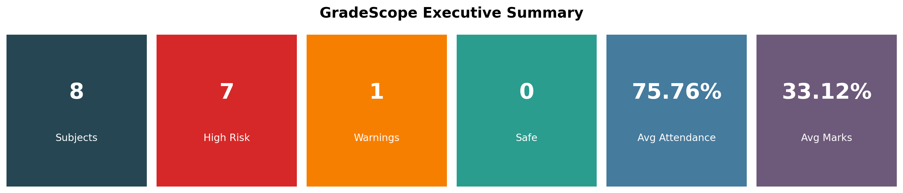
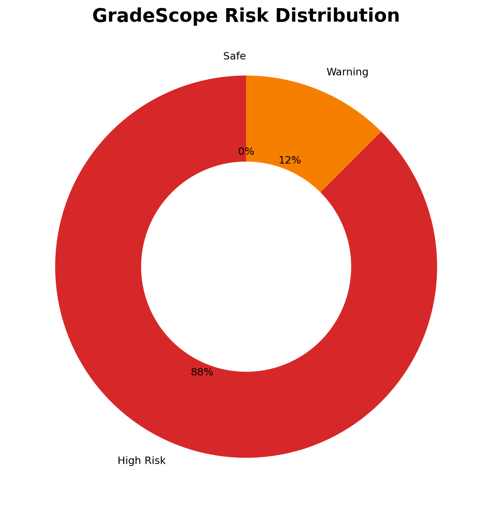
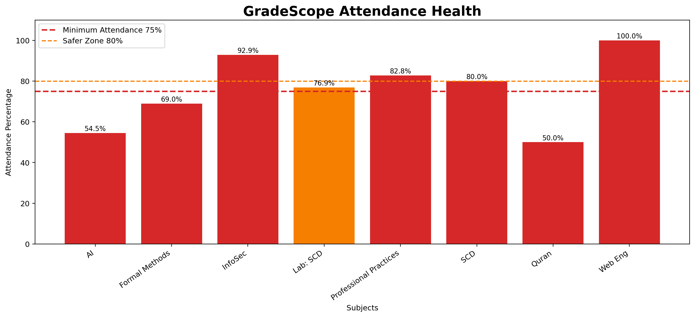
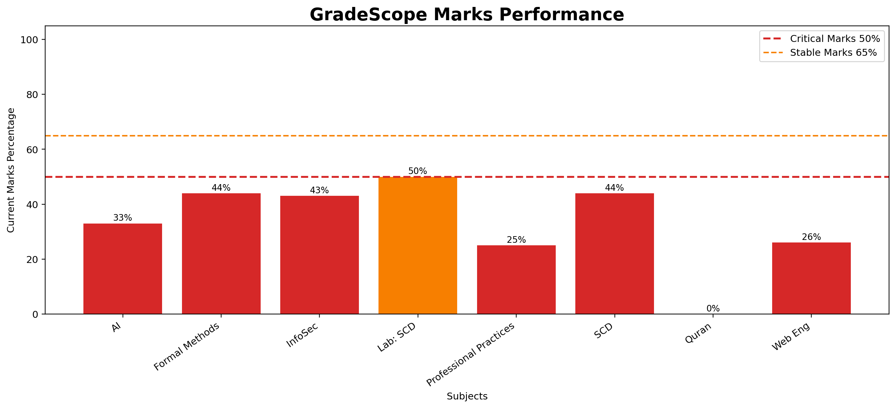
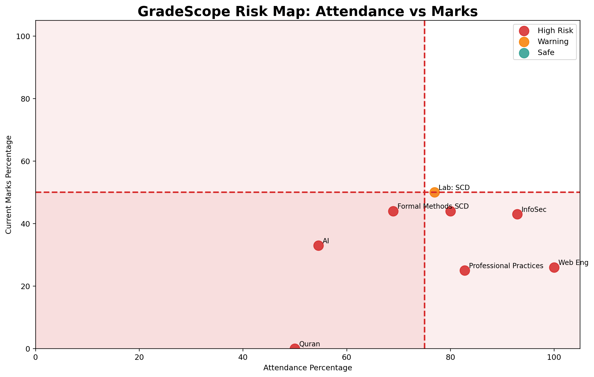

Academic Risk Dashboard with Portal Automation





| Subject | Attendance | Present | Absent | Marks | Grade | Reason | Risk | Recommendation |
|---|---|---|---|---|---|---|---|---|
| Artificial Intelligence | 54.55% | 12 | 10 | 33% | F | Short Attendance | High Risk | Attendance is below 75%. Attend every upcoming class. Marks are weak. Focus strongly before finals. Portal shows short attendance issue. Confirm with exam/department office. Final marks are not entered yet, so current result is incomplete. |
| Formal Methods in Software Engineering | 68.97% | 20 | 9 | 44% | F | Short Attendance | High Risk | Attendance is below 75%. Attend every upcoming class. Marks are weak. Focus strongly before finals. Portal shows short attendance issue. Confirm with exam/department office. Final marks are not entered yet, so current result is incomplete. |
| Information Security | 92.86% | 26 | 2 | 43% | - | nan | High Risk | Marks are weak. Focus strongly before finals. Final marks are not entered yet, so current result is incomplete. |
| Lab: Software Construction and Development | 76.92% | 10 | 3 | 50% | - | nan | Warning | Attendance is close to danger zone. Avoid absents. Marks are average. Improve quizzes, assignments, and final prep. Final marks are not entered yet, so current result is incomplete. |
| Professional Practices | 82.76% | 24 | 5 | 25% | - | nan | High Risk | Marks are weak. Focus strongly before finals. Final marks are not entered yet, so current result is incomplete. |
| Software Construction and Development | 80.00% | 11 | 3 | 44% | - | nan | High Risk | Marks are weak. Focus strongly before finals. Final marks are not entered yet, so current result is incomplete. |
| Teachings of Holy Quran | 50.00% | 7 | 7 | 0% | F | Short Attendance | High Risk | Attendance is below 75%. Attend every upcoming class. Marks are weak. Focus strongly before finals. Portal shows short attendance issue. Confirm with exam/department office. Final marks are not entered yet, so current result is incomplete. |
| Web Engineering | 100.00% | 14 | 0 | 26% | - | nan | High Risk | Marks are weak. Focus strongly before finals. Final marks are not entered yet, so current result is incomplete. |